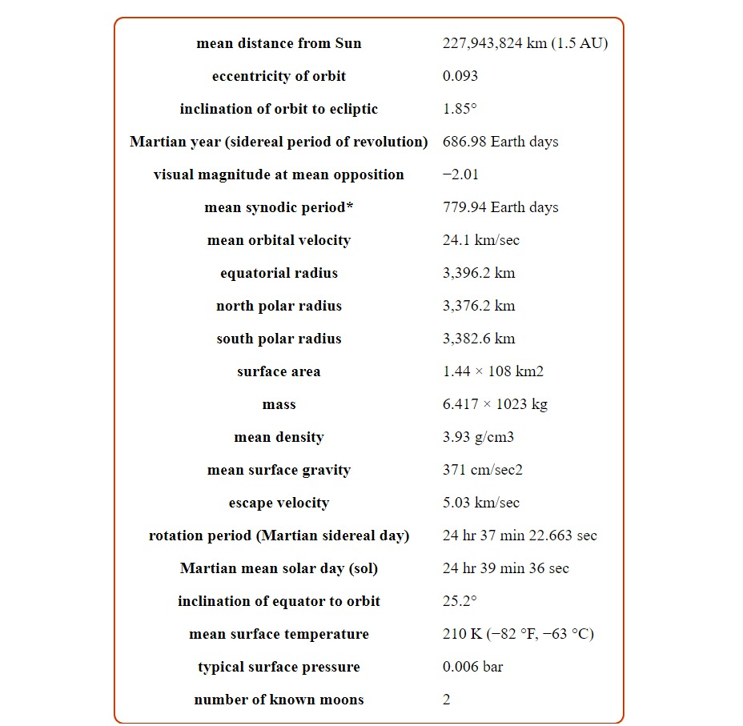

- We have put men on the Moon. Can people live in space? Can permanent communities be built
and inhabited off the Earth? Not long ago these questions would have been dismissed as
science fiction, as fantasy or, at best as the wishful thinking of men ahead of their
times Now they are asked seriously not only out of human curiosity, but also because
circumstances of the times stimulate the thought that space colonization offers large
potential benefits and hopes to an increasingly enclosed and circumscribed humanity.
- Permanent communities can be built and inhabited off the Earth. following chapters
present a detailed description of a system for the colonization of space. It is not the
best system that can be devised; nor is it complete. Not all the important questions about
how and why to colonize space have been posed. Of those that have, not all have been
answered satisfactorily. Nevertheless, the 10-week summer study is the most thorough
and comprehensive one made to date. On its basis space colonization appears to be
technically feasible, while the obstacles to further expansion of human frontiers in
this way are principally philosophical, political, and social rather than technological.
- The idea of terraforming Mars – aka "Earth's Twin" – is a fascinating idea. Between melting the
polar ice caps, slowly creating an atmosphere, and then engineering the environment to have
foliage, rivers, and standing bodies of water, there's enough there to inspire just about anyone!
But just how long would such an endeavor take, what would it cost us, and is it really an
effective use of our time and energy?
- Such were the questions dealt with by two papers presented at NASA's "Planetary Science Vision
2050 Workshop" last week (Mon. Feb. 27th – Wed. Mar. 1st). The first, titled "The Terraforming
Timeline", presents an abstract plan for turning the Red Planet into something green and habitable.
The second, titled "Mars Terraforming – the Wrong Way", rejects the idea of terraforming
altogether
and presents an alternative.
-
"Terraforming Mars can be divided into two phases. The first phase is warming the planet from the
present average surface temperature of -60° C a value close to Earth's average temperature to
+15° C,
and recreating a thick CO² atmosphere. This warming phase is relatively easy and quick, and could
take
~100 years. The second phase is producing levels of O² in the atmosphere that would allow
humans and other
large mammals to breath normally. This oxygenation phase is relatively difficult and would take 100,000
years or more, unless one postulates a technological breakthrough."
-
The suggestion that humans will soon set up bustling, long-lasting
colonies on Mars is something many of us take for granted. What this
lofty vision fails to appreciate, however, are the monumental—if not
intractable—challenges awaiting colonists who want to permanently
SPACE Humans Will Never Colonize Mars live on Mars. Unless we radically
adapt our brains and bodies to the harsh Martian environment, the Red Planet
will forever remain off limits to humans.
About Mars
-
Mars, fourth planet in the solar system in order of distance from the Sun and seventh in size and
mass.
It is a periodically conspicuous reddish object in the night sky. Mars is designated by the symbol ♂.
Sometimes called the Red Planet, Mars has long been associated with warfare and slaughter. It is
named
for the Roman god of war. As long as 3,000 years ago,Babylonian astronomer-astrologers called the
planet Nergal for their god of death and pestilence. The planet’s two moons, Phobos (Greek: “Fear”)
and Deimos (“Terror”), were named for two of the sons of Ares and Aphrodite (the counterparts of Mars
and Venus, respectively, in Greek mythology).
Why Colonize Mars?
- My grades aren't too bad in history, and I could bore you with a story
about 16th century Europeans and dreams of leaving their crowded,
disease-infested cities and moving to the New World. I could ramble
on about how the expansion to this continent brought about
progresses in exploration and cartography that would fuel the scientific
revolution of a new age. And I could explain how the country that
came out of it advanced the world perhaps centuries beyond its time in
scientific, economic, diplomatic, and religious progress. But that's not
why you're here.
- 1. Its Similarity to Earth
Mars has water, frozen underground and at the
polar caps. There is evidence that this water has, in
the past and present, flooded the surface in liquid
form. Signs of erosion can be found on the slopes of
craters and volcanoes. Geological features
resembling those on Earth suggest that Mars was
once a wet and hospitable planet.
A day on Mars is 24.5 hours long. Mars is a third the size of Earth, but
it has as much land area as the seven continents combined. Its gravity
is 2.7 times less than that of Earth: enough to remain flat-footed on
the surface, but a low enough escape velocity to make launching from
Mars relatively simple. Remember, it was much easier for Apollo to lift
off from the moon than it was to leave Earth. Construction materials
would be lighter as well, facilitating labor in the early colony. The
health benefits of such an environment are unknown, but it is
theorized that Mars might prevent and relieve forms of arthritis and
back pain. Also, Martian-born children might be taller than their Terran
cousins.
- 2. Its Scientific Secrets
With its similarity to Earth, there is a strong possibility that bacterial
life (or something more?) exists on the planet. Some people believe
that Viking detected it way back in 1976. Others believe that we found
it in a Martian meteorite. Rovers are on their way to Mars to settle the
debate, but we may only be sure if humans look for themselves. As
any engineer will tell you, the ease with which a human being can
cover a stretch of ground and examine specimens along the way,
gathering and processing data, cannot be emulated with a machine. If
we ever find life, we can begin to answer some of the biggest
questions we've ever asked: "Are we alone in the universe? What else
is out there? What is the basic unit of life? What does life need to
survive?"
From a geological standpoint alone, Mars is exciting because it offers
scientists a view of how planets develop. Mars is billions of years older
than the Earth, and its features are much more exaggerated. The
largest canyons, volcanoes, and craters in the solar system are
available for our study.
- 3. Its Diplomatic Potential
It is obvious that the world isn't perfect, but we've been trying for the
entirety of our civilized existence. We've reached a point now where
the majority of the world's superpowers are on good enough terms to
begin an international joint-project to colonize Mars. This was much
the theory with the International Space Station, but dirty politics
proved how immature the world's superpowers are. Ending the
quarrelling and going to space might sound like ignorant idealism, but
imagine the diplomatic potential. When we become united in a goal,
not just as Americans or as Russians but as mankind, all of humanity
puts aside its differences.
Even if the initial trip to Mars is sponsored by one nation or one space
agency, in the end Mars will be for everyone. The Old World's
boundaries will not be able to restrain the emigration. Who knows, the
concept of countries might remain a thing of the Earth, an archaic
reminder of castles and kings and the battle for power. Mars could be
the beginning of a new era in human diplomacy.
- 4. Its Economic Value
Mars is worth a lot of money. There are 144 trillion square meters of
surface area, roughly the land area of the Earth, available for
development. I'm not going to tell you how great all that land is for
residential, commercial, and industrial use... go play Sim City.
An important part of the fusion reaction process is deuterium, a stable
isotope of hydrogen. Once we can contain a fusion reaction, the
deuterium-tritium reaction has a high yield of energy for the small
amount of fuel put in. Deuterium, or heavy hydrogen, is hard to obtain
on Earth, but on Mars it is five times more abundant in the form of
Hydrogen-Deuterium-Oxygen (See Also: Compositions). A milliliter of
liquid heavy-hydrogen fuel would produce as much energy as 20 tons
of coal. Deuterium is also important in chemistry because it reacts the
same way as hydrogen, but can be distinguished from hydrogen by its
mass. These reactions occur slower than normal hydrogen reactions.
There is an abundance of rare metals on Mars such as platinum, gold,
silver, and others. Shipping from Mars to Earth, as mentioned above,
is much easier than the other way around. Even more promising is the
proximity of the asteroid belt to Mars. Dactyl, the moon orbiting the
asteroid Ida shown in this picture, is 1.4 kilometers in diameter, yet it
contains more iron that the human race has used in its entire
existence. These asteroids could be mined near Mars and shipped from
the planet for little cost. What we could see develop is a triangle trade
route, much like the one in the 18th century between Britain, the West
Indies, and America. The economic potential is colossal.
- 5. Its Location
That brings us to our next point: location. Mars is relatively close to
the Earth. Mars sits between the asteroid belt and us, acting as a kind
of stepping stone to what lies beyond. It remains close enough to the
sun to benefit from its heat (and light) but remains far enough away to
be protected from any significant change in the sun's heat output. (We
still know little about the sun's long-term heat cycles.)
- 6. Its Home for Mankind
My personal favorite reason for colonizing Mars is that it offers a
backup plan for humanity. Every few million years, the Earth tends to
be wiped clear of almost all life in a globally catastrophic event (read:
asteroid collision). An asteroid the size of Dactyl could wipe us off the
face of the Earth. Who knows how close we've already come to
blowing ourselves to smithereens.
A colony on Mars is not far off, but the question remains: could that
colony be self-sufficient? The time will come when Mars will not need
Earth to sustain it, much like the United States found itself long before
the Revolutionary War. Does that mean life will be self-sufficient? No.
We may be able to grow our own food on the planet in greenhouses,
but what about wild animals, and birds, and fish, and rivers, and
oceans? Terraforming, then, becomes a necessity in more than one
way. Terraforming is the process of creating another Earth, and you
can find out more about it by reading the various terraforming articles
on this site. The general consensus is terraforming is necessary for
global colonization and global colonization is necessary for
terraforming. The two go hand-in-hand.
- 7. Its Challenge for Mankind
Colonizing Mars will no doubt be the most
difficult thing that humanity has ever pursued.
Like building a bridge or a skyscraper, it will
represent the pinnacle of human achievement
up to that time. We can begin colonization now
with technology that exists now; this is not
science fiction anymore.
Before he began his fateful expedition to Mount Everest, George
Mallory was asked why man kept trying to reach the summit of that
mountain. "Because it is there," he said.
In the words of the great science fiction author Kim Stanley Robinson,
"We are the consciousness of the universe, and our job is to spread
that around, to go look at things, to live everywhere we can. It's too
dangerous to keep the consciousness of the universe on one planet; it
could be wiped out. Mars will always remain Mars, different from
Earth, colder and wilder. But it can be Mars and ours at the same time.
And it will be. There is this about the human mind: if it can be done, it
will be done. We can do it, so we will do it. So we might as well start."
Planetary Data for Mars

We’re Already Colonizing Mars
- It starts with Instagram posts and discarded parachutes, and the sense that a world is ours for
the taking.
- Sometime in April, the Ingenuity helicopter will take to the Martian air, making it, in NASA’s
words, “the
first attempt at powered, controlled flight of an aircraft on another planet.” Or, to put it in
more mundane
terms, Mars will have become another airport. Of course, many crafts have already landed on
Mars—the most recent
carrying the rover Perseverance, with the Ingenuity copter nested inside.
That landing spot was named by the NASA team “Octavia E. Butler Landing.” (Official site
christenings throughout
the solar system must be bestowed by the International Astronomical Union.) At first blush, this
seems like a
deserved homage to Butler as a visionary artist (for her contributions to the genre of
speculative fiction) and
as a pathbreaking figure (as the first sci-fi author to receive a MacArthur Fellowship). The
name conjoins the
daring mission of the Perseverance rover with the legacy of a luminous writer of intellectually
daring novels.
It also meaningfully honors a Black woman, on behalf of NASA.